식도 악성 질환
조기식도암의 육안분류와 심달도, 요오드·NBI·확대 내시경 소견, 내시경 절제(ESD/EMR)의 적응에서 수술·화학방사선요법까지. 편평세포암과 바렛식도선암, 림프절 전이, ESD 후 협착, 그리고 식도 흑색종·위관암(gastric tube cancer)·전이성 병변을 EndoTODAY 실전 관점으로 정리한다.
1. 식도암 개요와 내시경 분류
식도암은 전 세계적으로 발생률 9번째, 사망률 6번째의 암이다. 우리나라에서는 2013년 2,382명이 진단되었고 그중 선암(adenocarcinoma)은 3.2%에 불과했다. 즉 한국인의 식도암은 압도적으로 편평세포암이며, 서양과 달리 바렛식도선암의 비중이 매우 낮다. 내시경 검진이 보편화되면서 조기식도암 발견이 늘고 있다.
바렛식도(Barrett's esophagus)란 쉽게 말해 식도 안의 장상피화생(Intestinal metaplasia in esophagus)이다. 발생 원인은 GERD와 같아서 Reflux esophagitis가 동반된 경우가 많고, 내시경적 소견도 역류성식도염과 비슷하다. 다만 식도의 Squamous epithelium과 위의 Columnar epithelium의 경계가 EGJ 위로 올라와 있는 점이 다르다. GERD는 점막이 "찢어진 것"이고, 바렛은 상피가 위로 올라온 것이다. 이 바렛식도가 서양 식도선암의 주된 배경이지만, 국내에서는 그 빈도가 낮아 식도암의 대부분이 편평세포암으로 나타난다.
위암만큼 식도암의 내시경 분류가 임상에서 널리 쓰이지는 않는다. 결과지에 "superficial esophageal cancer" 또는 "advanced esophageal cancer"라고 간단히 적는 경우가 많다. 그러나 위암과 매우 유사한 분류를 적용하면 위치·심달도·치료방침을 일관되게 기술할 수 있다. 2009년 Japanese classification of esophageal cancer(10th ed)의 방법을 따르면 되는데, 조기위암 파리 분류와 거의 같아 외우기 쉽다.
표재성 식도암의 육안형은 0-Ip(유경성 융기) · 0-Is(무경성 융기) · 0-IIa(표면 융기) · 0-IIb(표면 평탄) · 0-IIc(표면 함몰) · 0-III(함몰형 궤양)로 나눈다. 병소에 융기부와 함몰부가 섞여 있으면 주된 형태를 택해 기술한다. 진행성 병변은 종양의 중심 위치와 주변 상피 변화, 고유근층 침범에 따른 연동운동 소실로 판단한다.
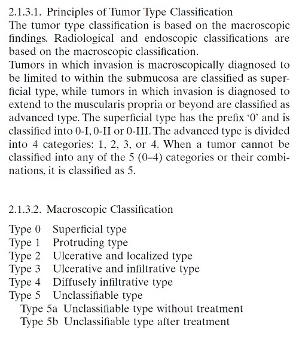
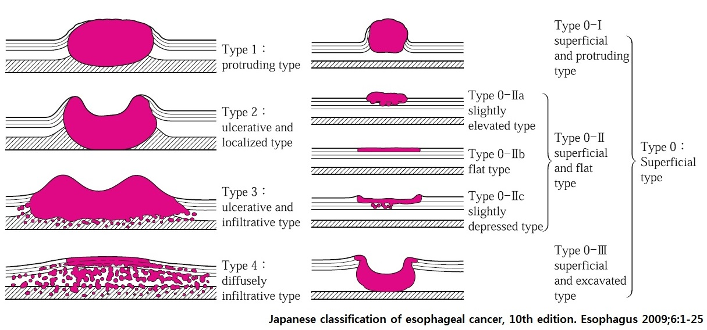
- 육안형은 "가장 두드러진 성분"으로 결정하되, IIa+IIc처럼 복합형으로 쓰면 심달도 추정에 도움이 된다.
- 위암과 달리 식도는 심달도(M1/M2/M3, SM1/SM2)가 치료방침을 좌우하므로 분류와 함께 반드시 기술한다.
- 0-IIc라도 주변에 넓은 superficial spreading이 있으면 실제 크기가 육안보다 훨씬 클 수 있다.
- EGJ 부근 병변에서는 Squamous epithelium과 Columnar epithelium의 경계(즉 바렛 상피의 상방 경계)를 먼저 확인해 두면, 편평세포암과 바렛유래 선암을 감별하고 위치를 기술하는 데 도움이 된다.
2. 조기식도암의 심달도와 림프절 전이 — 왜 중요한가
식도암 내시경 진단에서 가장 중요한 점은 위암과 조직병리학적 특성이 크게 다르다는 것이다. 위암에서는 점막층을 M1·M2·M3로 나누는 것이 큰 의미가 없지만, 식도에서는 매우 중요하다(Endoscopy 2005). 그 이유는 M3(muscularis mucosa 침범)에서 림프절 전이가 갑자기 많아지기 때문이다.
식도 상피는 epithelium(M1) · lamina propria(M2) · muscularis mucosa(M3)로 나뉜다. 점막하층(SM)은 식도에서 SM1 = 200 µm까지로 정의한다. 위암의 SM1이 500 µm인 것과 다르므로 이 차이를 반드시 기억한다. 편평세포암에서 M3는 림프절 전이 위험이 상당히 높고, 간혹 M2에서도 림프절 전이를 보는 증례가 있다.
식도암은 점막암 단계에서부터 림프절 전이가 가능하다는 점이 위암과 결정적으로 다르다. 다만 기존의 림프절 전이율 자료는 retrospective surgical pathology에 기반해 다소 과대평가(overestimation)되었을 가능성이 있다. M3와 SM1의 구분은 실제로 매우 어려워, 내시경·EUS로 심달도를 정확히 맞히기 힘든 영역임을 전제로 치료를 결정한다.
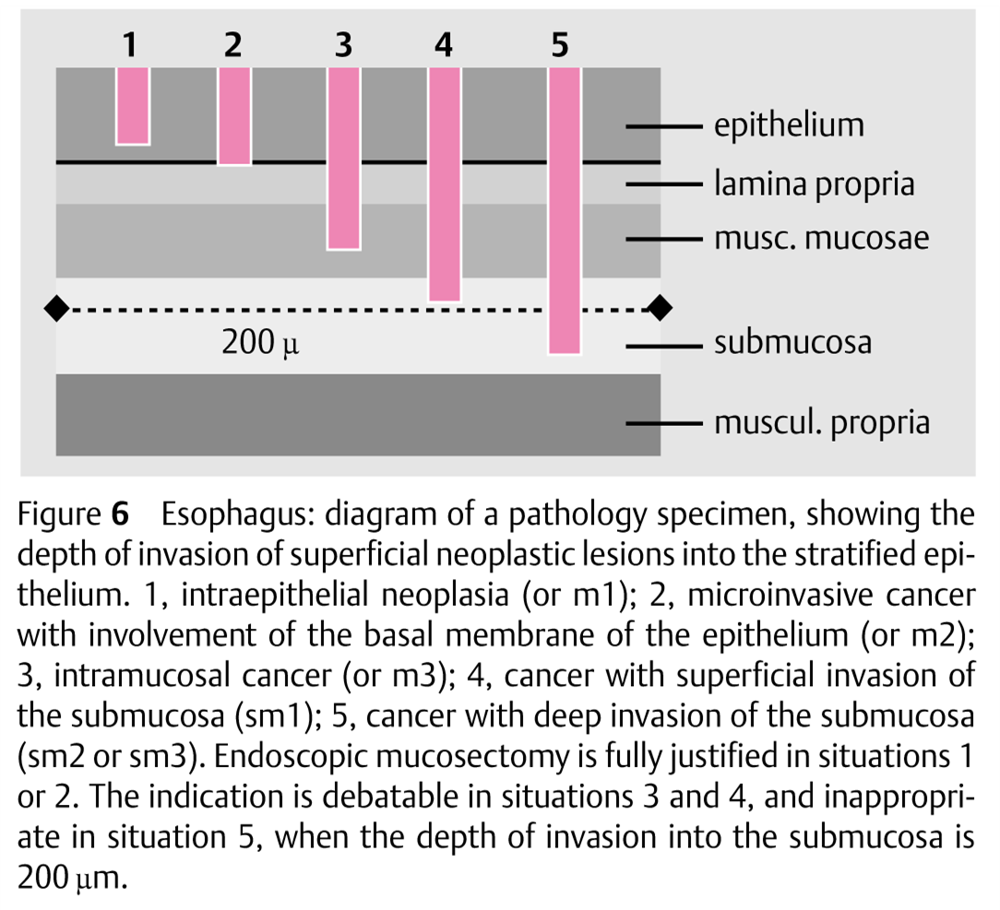
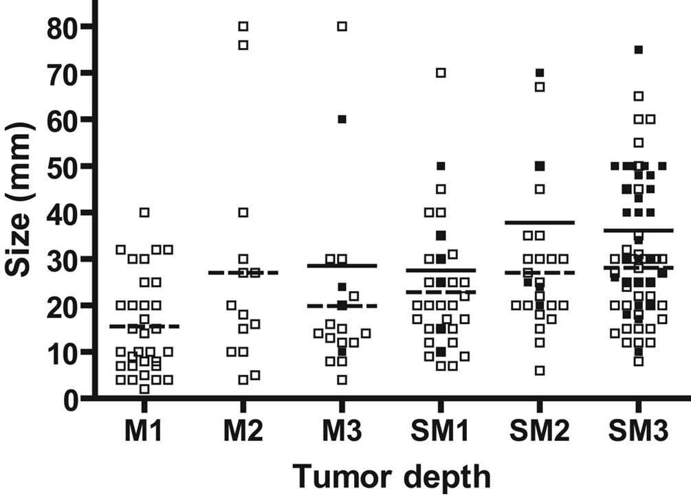
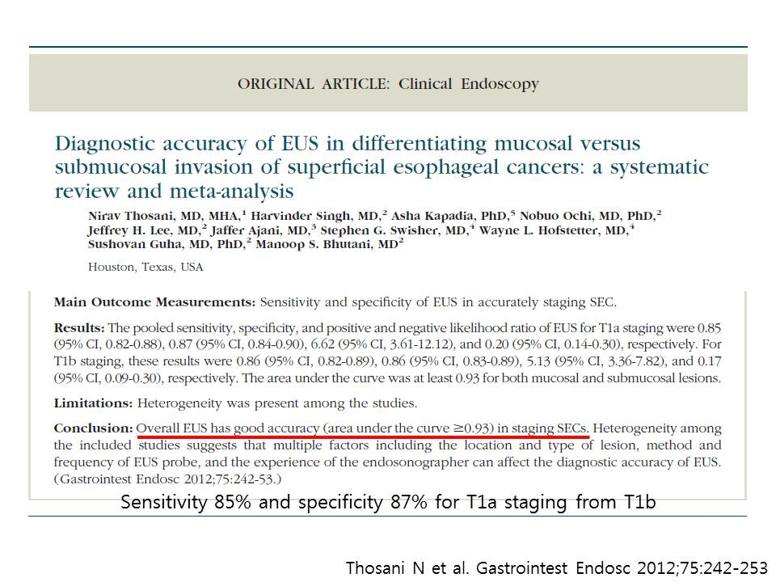
- 식도 SM1 = 200 µm, 위 SM1 = 500 µm. 두 수치를 혼동하면 ESD 적응 판단이 흔들린다.
- 편평세포암은 M3부터 전이 위험이 커지고, M2에서도 예외적으로 전이 증례가 있다.
- 육안형(특히 IIa·Is)이 뚜렷할수록 심달도가 깊은 경향이 있으나, 절대적이지 않다.
3. 표재성 편평세포암의 내시경 소견 — 요오드·NBI·확대
표재성 식도암을 찾아내는 대표적인 단서는 여섯 가지다. (1) 점막의 혼탁과 조잡, (2) 혈관망의 변화 혹은 소실(점막하 혈관상 소실), (3) 점막 발적, (4) 융기성 병변(높을수록 심달도가 깊음), (5) 함몰성 병변, (6) 식도의 비정상적 연동운동(고유근층 침범·종괴 형성). 이 소견들이 하나라도 보이면 요오드(IKI) 색소내시경으로 확인한다.
포화 요오드 용액을 뿌리면 정상 편평상피는 갈색으로 염색되고, 종양·이형성 부위는 염색되지 않아 담도·황색 반점(iodine-unstained area)으로 드러난다. 요오드 비염색 부위는 전 암성 병변의 표지가 되지만 염증·미란·재생상피도 비염색을 보이므로, NBI(narrow band imaging)와 확대내시경으로 혈관·표면구조를 함께 관찰해 감별한다. 확대 관찰에서 비정상 미세혈관(IPCL)과 표면 요철이 있으면 종양을 강하게 시사한다.
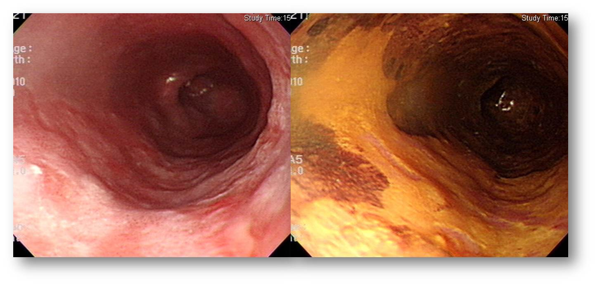
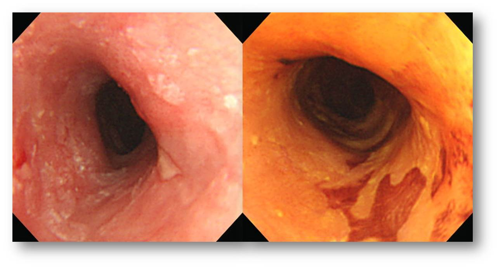
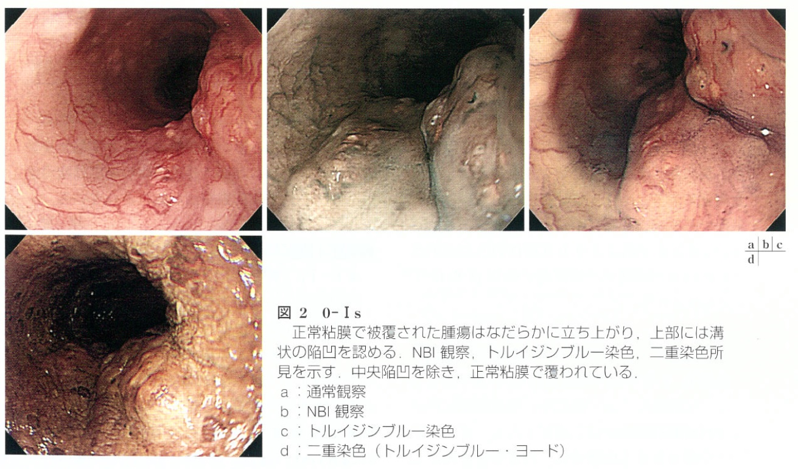
- 1차: NBI·확대내시경으로 혈관·표면구조를 먼저 본 뒤, 요오드 염색으로 범위를 확인한다.
- 요오드 비염색 = 무조건 암이 아니다. 재생·미란과 감별하고 반드시 조직검사로 확진한다.
- 병소 크기·전주 침범 여부를 기록해야 ESD 가능성(일괄절제 여부)을 판단할 수 있다.
4. carcinoma in situ의 함정 — "암은 암인데 암이 아님"
식도에서 carcinoma in situ는 intraepithelial carcinoma, 즉 상피에 국한된 병변으로 점막암과 다르다. 조직검사에서 편평세포암으로 나오면 식도암으로 진단하지만, ESD나 수술 후 최종 병리가 intraepithelial neoplasm(식도 CIS)으로 나오면 현행 분류상 C-code가 아닌 D-code가 부여된다. 진단명에 carcinoma가 들어있는데 암 혜택을 받지 못하는 모순이 생긴다.
정리하면 식도에서 (1) intraepithelial carcinoma = CIS = D-code(암은 암인데 암 아님), (2) lamina propria 침범 = C15(암), (3) muscularis mucosa 침범 = C15(암)이다. 서양은 CIS/고도이형성(HGD)을 동일하게 보고 D-code를 고집하는 반면, 동아시아는 형태학적 진단기준을 중시해 점막암을 모두 암으로 분류하는 전통이 있어 보험·제도적 괴리가 크다.
식도는 stratified epithelium이고 basement membrane이 상피 하방에 명확해 침윤 인지가 어렵지 않다. 병리학자의 관점에서 carcinoma in situ라는 용어 자체가 모순(invasion=암 + in situ=비침윤)이라는 지적이 설득력 있다. 실제로 생검 단계에서 명확한 침윤을 확인하지 못했다면 "squamous carcinoma, invasiveness uncertain" 또는 고도이형성으로 진단하는 신중함이 필요하다.
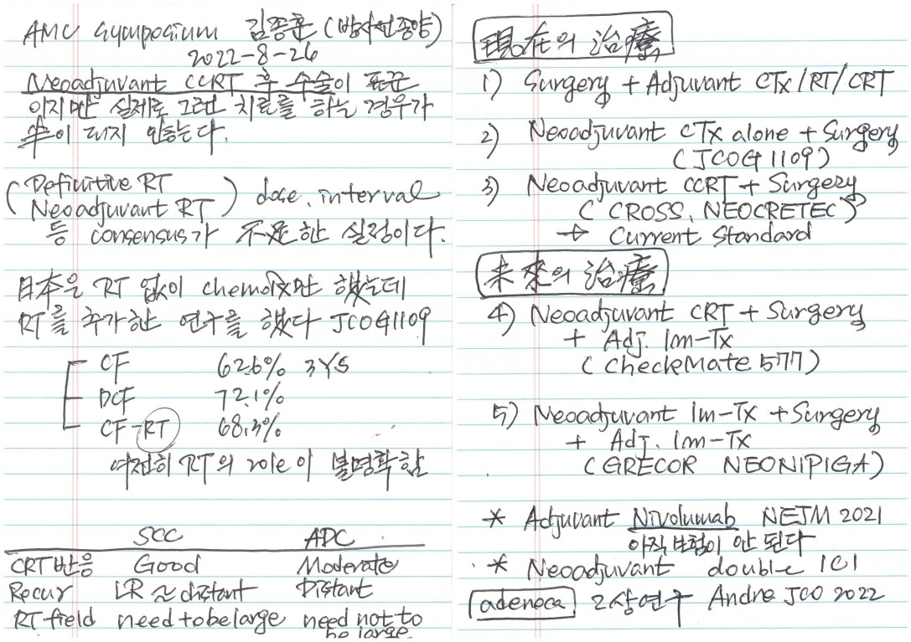
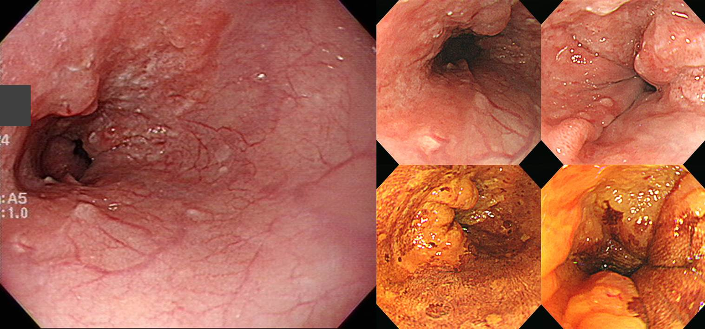
- 생검에서 carcinoma가 나와도 절제 전 최종 진단명 확정은 유보하고, 최종 병리를 진단명으로 삼는 것이 안전하다.
- 환자에게는 상피내암 가능성까지 함께 설명해 불필요한 오해와 실랑이를 줄인다.
- 제도(보험·산정특례) 문제는 의사가 판단할 일이 아니며, 진단과 치료에 집중한다.
5. 조기식도암의 내시경 치료(ESD/EMR)와 적응
조기식도암의 내시경 절제는 위암보다 점막층 세부분류가 훨씬 중요하다. 표준은 ESD이고, 일괄절제(en bloc)가 필요한 병변에서 EMR보다 우수하다. 삼성서울병원은 2022년 기준 매년 100예 이상의 표재성 식도암 내시경 치료를 시행하며, 단일 기관으로는 세계에서 가장 많은 시술을 시행하고 있다.
ESD 적응에 대해 민양원 교수는 200 µm 이하의 superficial SM cancer까지 고려하는 적극적 입장을 취한다. 삼성서울병원 2007~2016년 식도암 ESD 초기 분석에서 en bloc resection rate 93.2%, complete resection rate 75.8%였다. ASCO 2016에서 발표된 일본 연구에서는 SM 침범이 있을 때 CCRT를 한 경우 수술적 치료에 못지않은 결과가 나왔다.
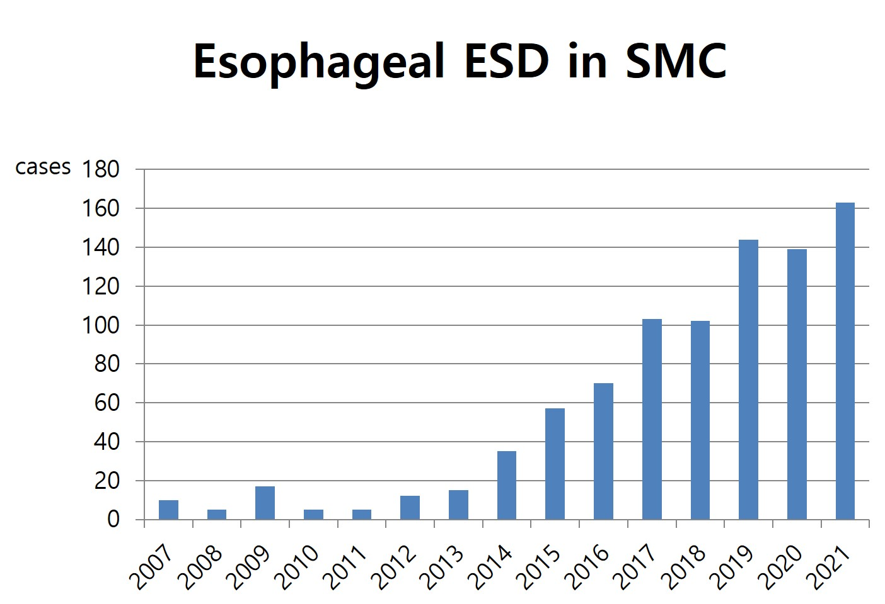
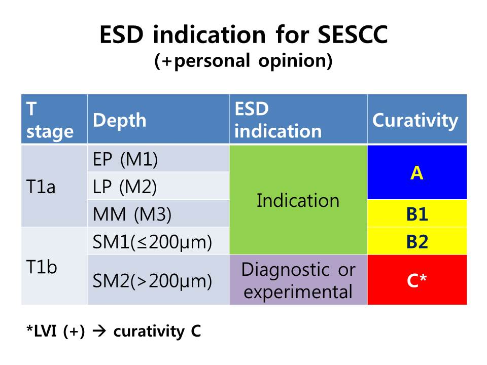
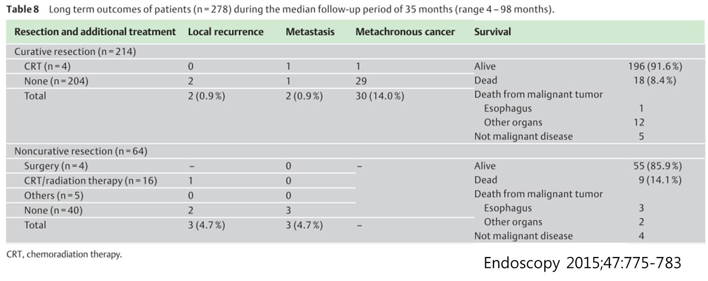
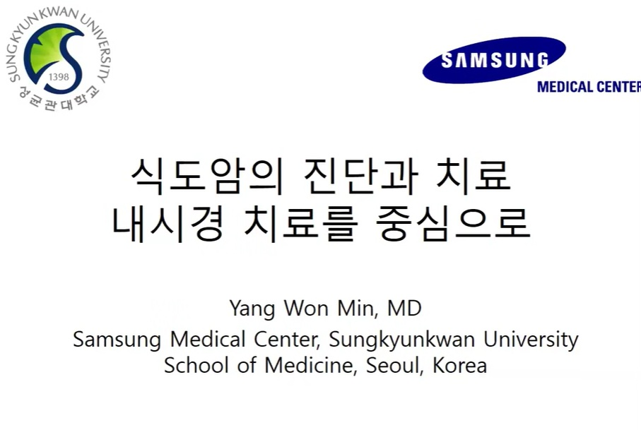
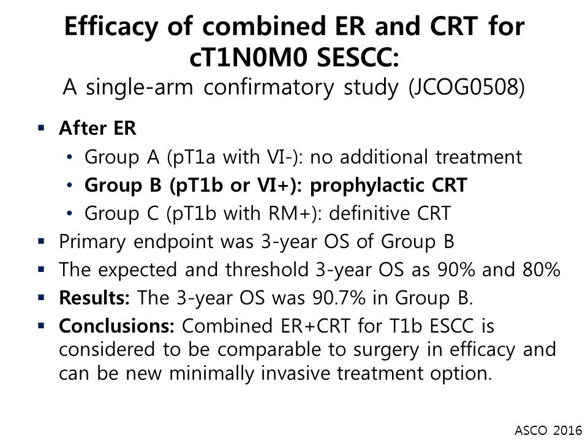
- 절제 적응: 편평세포암 M1~M2, 림프혈관침윤 음성, 전주 침범이 아니어서 일괄절제 가능한 병변.
ESD en bloc원칙. - ESD 후 궤양 치료·증상 조절:
esomeprazole 40mg qd pc 4-8wk(또는kcab 50mg qd). - ESD 후 통증·연하통:
PPI qd+ 필요시 진통제, 유동식에서 단계적 식이 진행. - 절제 후 심달도·림프혈관침윤에 따라 추가 수술 또는
cisplatin+5-FU CRT를 결정한다.
06 — Label식도 선암과 바렛식도선암
하부식도 선암에서 주변에 바렛식도가 있으면 바렛식도선암이라고 진단한다. 대부분 둘이 동시에 진단된다. 하부식도 선암이 크면 원래 바렛식도였던 부위가 없어져 바렛식도선암으로 확실히 부르지 못하는 경우가 많다. 따라서 정확히 바렛식도선암이라 부를 수 있는 것은 비교적 early stage의 하부식도선암이다.
Barrett's Esophagus = "Intestinal Metaplasia In Esophagus"
바렛식도는 결국 식도 점막의 장상피화생(intestinal metaplasia)이다. 발생 원인은 GERD와 같아서 역류(Reflux) 식도염(reflux esophagitis)이 동반된 경우가 많고, 내시경적 소견도 비슷하다. 즉 식도의 편평상피(Squamous epithelium)와 위의 원주상피(Columnar epithelium)의 경계가 EGJ 위로 올라와 있는 모습으로 보인다.
개념을 구분하면, GERD는 점막이 "찢어진 것"이고 바렛은 상피가 위로 올라온 것이다.
바렛식도는 바렛식도선암의 전구병변이지만, 바렛식도로 추적하던 환자에서 나중에 암이 발견되는 예는 매우 드물다. 바렛선암이 잘 발생하는 방향은 2-4시 방향이며, EG junction과 떨어진 병소는 방향과 무관하게 random하게 생기는 경향이 있다. EG junction에 큰 선암이 발견되면 병소 중앙이 어디인지, 주변에 바렛식도가 있는지 반드시 살핀다.
SM 침윤 깊이 기준 — 편평세포암과 다르다
Paris classification에 따르면 식도 EMR/ESD 표본에서 편평세포암의 경우 200 µm까지, 바렛선암의 경우 500 µm까지를 SM1으로 간주한다. 일본에서는 바렛선암을 위암과 비슷하게 취급해 500 µm가 적용되지만 근거는 부족하다. 바렛선암을 cardia cancer와 구분하는 이유는 sm cancer에서 림프절 전이 위험이 아직 정립되지 않았기 때문이다.
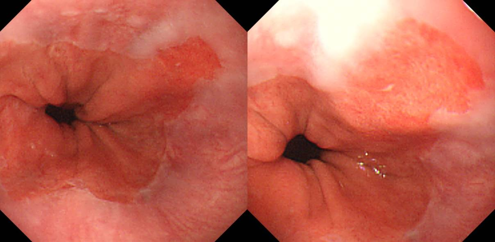
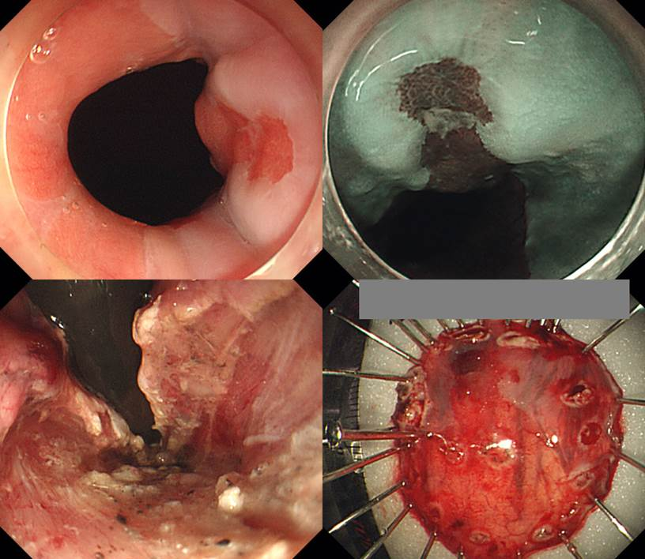
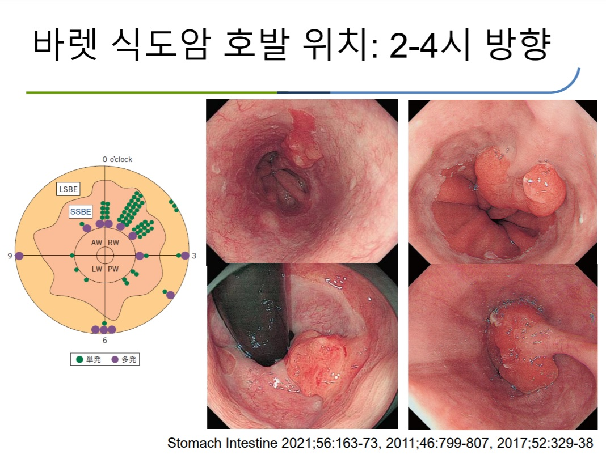
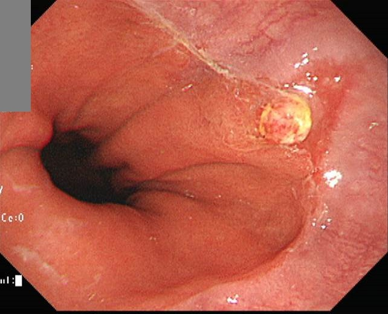
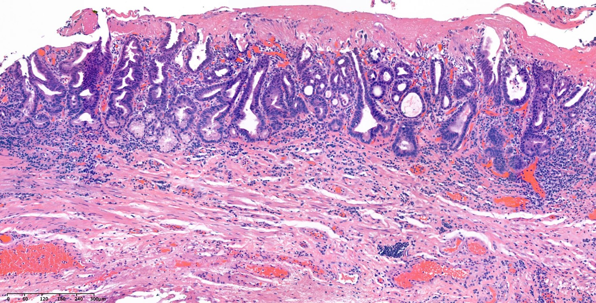
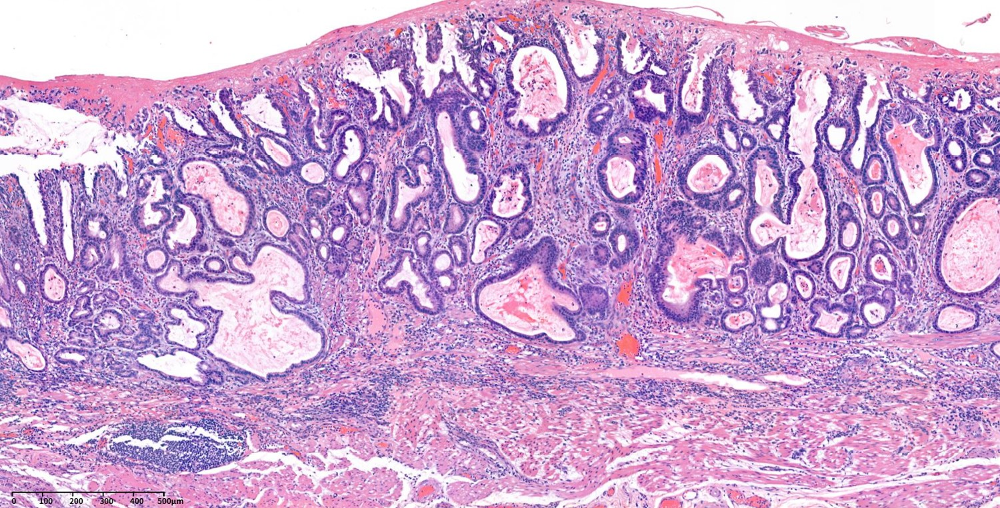
- EG junction cancer를 보면 병소 중앙 위치와 주변 바렛식도 유무를 반드시 기술한다.
- 처음 발견되었거나 과거와 모양이 다른 sentinel polyp은 반드시 조직검사한다.
- 병리에서 암 하단에 esophageal gland가 보이면 바렛식도선암으로 변경할 수 있다.
- Early stage 바렛선암·HGD:
ESD(en bloc) 또는 RFA·EMR. pT1a, 림프혈관침윤 음성이면 내시경 완치 가능. - EG junction 선암 진행성: 위암에 준해
cisplatin+5-FU또는paclitaxel+carboplatin기반 항암·방사선 병합. - 역류 조절·바렛 감시:
esomeprazole 40mg qd장기, 정기 내시경 추적(seattle protocol 준용).
7. 병기 진단 — 내시경, EUS, CT/PET
진단의 출발은 내시경 + 조직검사다. 심달도(T staging)는 EUS로 평가하지만 M3/SM1 구분은 여전히 어렵다. 림프절(N staging)과 원격 전이(M staging)는 CT와 PET로 평가한다. 식도암은 점막암에서부터 림프절 전이가 가능하고, 하부식도암은 종종 복강내 림프절(예: common hepatic artery node)로 전이할 수 있다.
치료계획 수립에는 NCCN 가이드라인이 널리 쓰인다. 2016년 NCCN은 cT1bN+M0 또는 cT2-T4aN0N+M0에서 preoperative chemoRT를 권고했는데, 이는 점막하암에서 림프절 양성이거나, 림프절과 무관하게 심달도가 proper muscle 이상인 경우 수술 전 항암방사선을 권한다는 의미다.
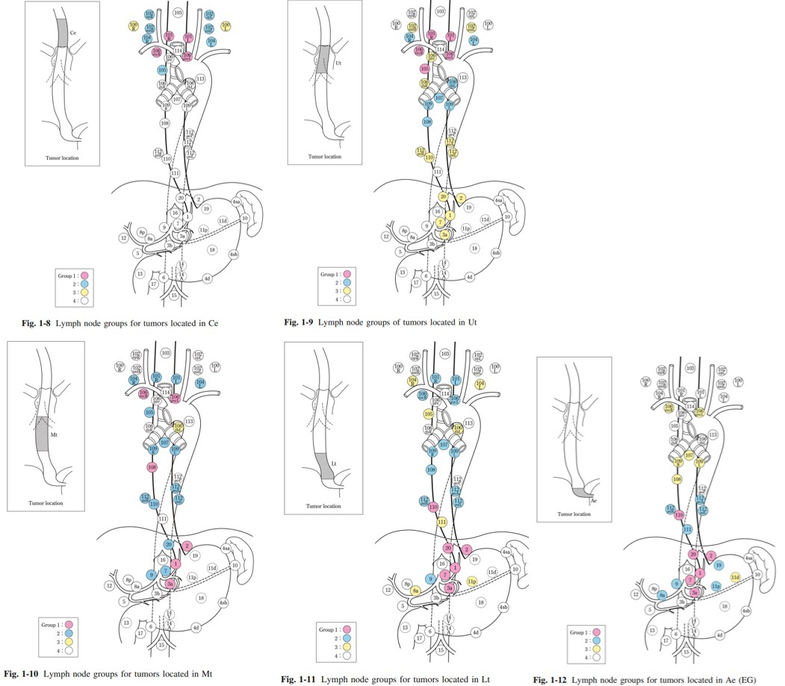
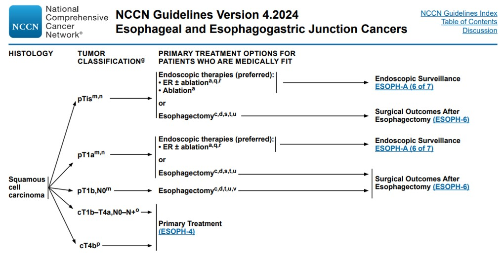
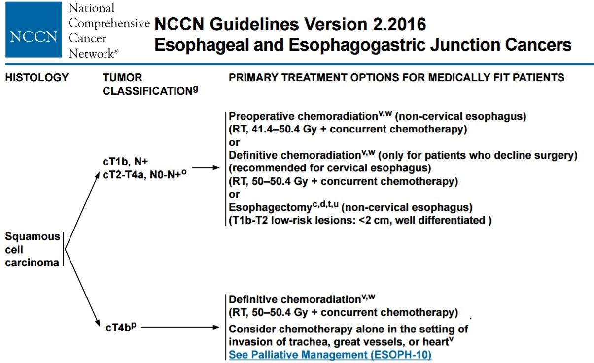
- 내시경 결과지에 심달도를 적지 않으면 치료방침 논의가 불가능하다. M1/M2/M3, SM1 여부를 명시한다.
- EUS는 M3/SM1 구분이 어렵다. 영상 소견과 절제 후 병리를 함께 고려한다.
- 하부식도암은 복강내 림프절 전이를 반드시 확인한다(선암에서 특히).
8. 치료의 큰 틀 — 내시경·수술·화학방사선요법
조기식도암은 내시경 절제로 완치를 노린다. 심달도가 깊거나 림프절 전이가 있으면 neoadjuvant CCRT 후 수술이 표준이다. T3 또는 N1 이상에서는 neoadjuvant CCRT 후 수술이 표준이며(NEJM 연구), 이보다 낮은 병기에서도 폭넓게 적용된다. 수술 후 가이드라인에 따르면 R0 resection이면 추가치료를 하지 않으나, 현실에서는 adjuvant chemotherapy를 많이 시행한다.
30일 사망률은 서양 보고에서 3% 전후이고, 우리나라 대형 병원은 1% 전후다. 수술 후 문합부 누출(leak)에는 endoscopic vacuum-assisted closure(VAC)가 유용하다. Levin tube 끝에 polyurethane sponge를 묶어 leak 부위에 넣고 음압을 걸면 효과적으로 배액되면서 치료된다. Sponge를 쓰지 않으면 관에 점막이 달라붙어 배액이 안 된다.
식도암 협착에서 stent의 역할은 도전받고 있다. Preop bridge setting에서는 stent보다 gastrostomy가 선호되며, palliative setting에서도 gastrostomy를 많이 권한다.
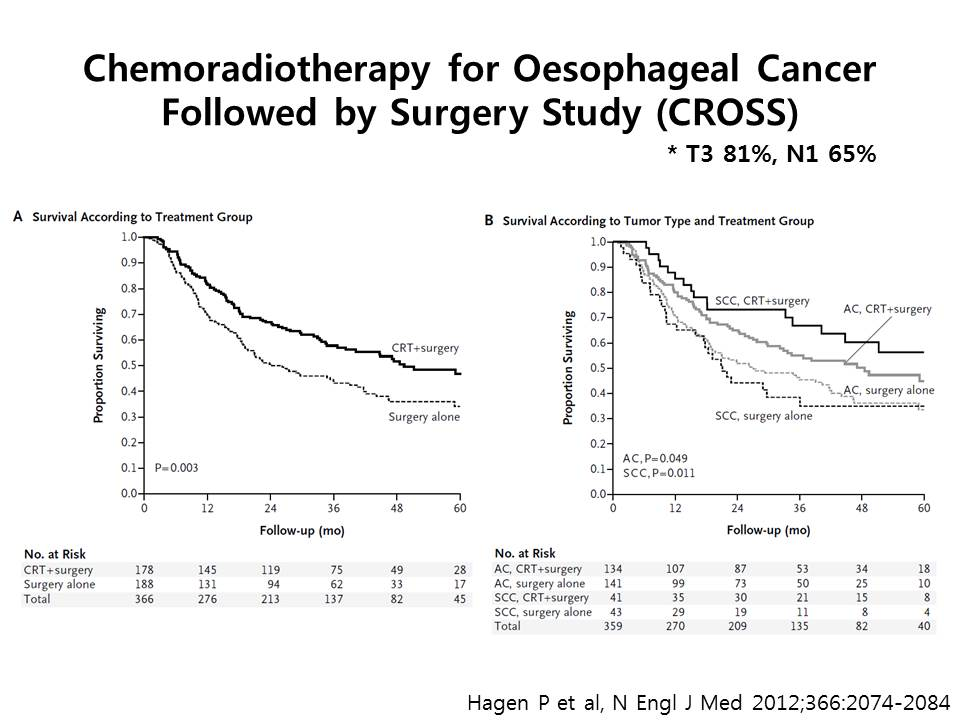
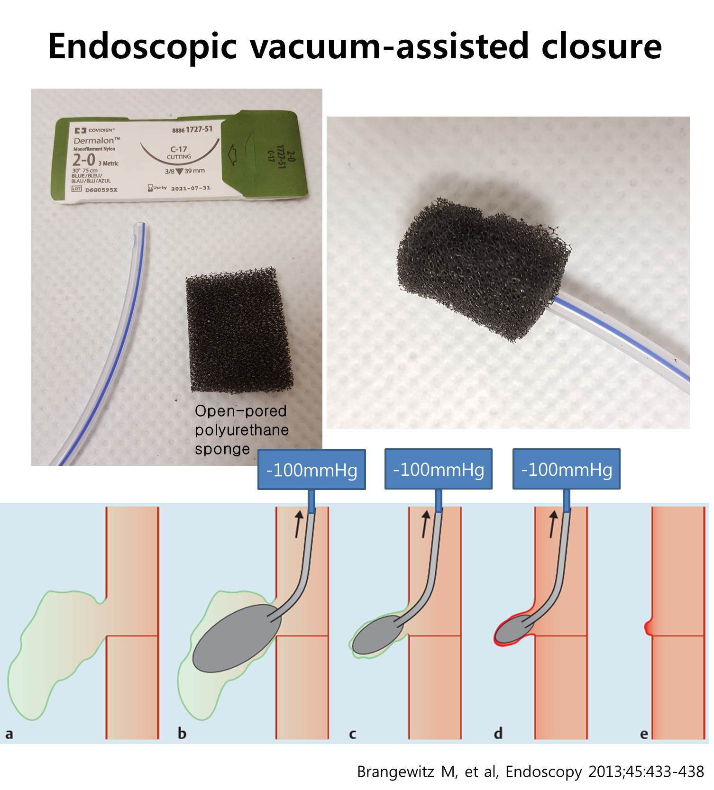
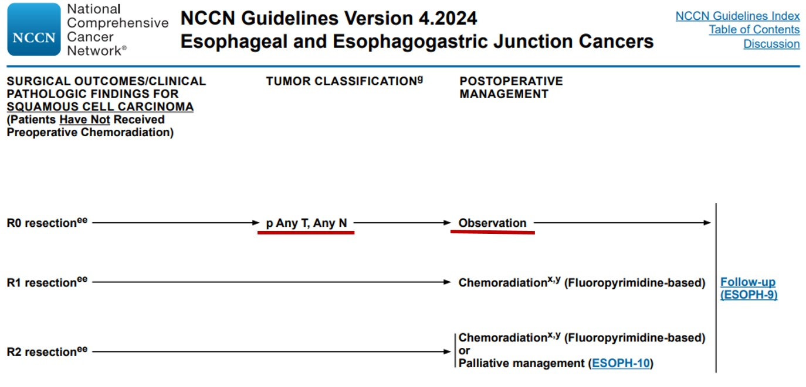
- 심달도 얕은 편평세포암(M1~M2, 림프혈관 음성): 내시경 절제(ESD)로 완치.
- 국소 진행성(T3/N+ 또는 cT1bN+·cT2-T4a):
cisplatin+5-FU또는paclitaxel+carboplatin+ 방사선 neoadjuvant CCRT 후 수술. - 수술 후 R0: 가이드라인상 관찰. 고위험(림프절 양성 등)에서
cisplatin+5-FU adjuvant를 현실적으로 고려. - 문합부 누출: endoscopic VAC + 광범위 항생제, 필요시 배액·stent.
- 연하통·식도 자극 증상:
esomeprazole 40mg qd또는kcab 50mg qd.
9. 식도암 수술 — Ivor-Lewis와 3-field dissection
중하부 식도암의 대표적 수술은 Ivor-Lewis operation으로, 중하부 식도를 절제한 뒤 위를 당겨 올려 남은 식도와 문합하는 방법이다. 림프절 곽청 범위는 경부·흉부·복부의 three-field dissection 개념으로 논의된다. 수술 범위와 재건 방식에 따라 합병증·삶의 질이 크게 달라진다.
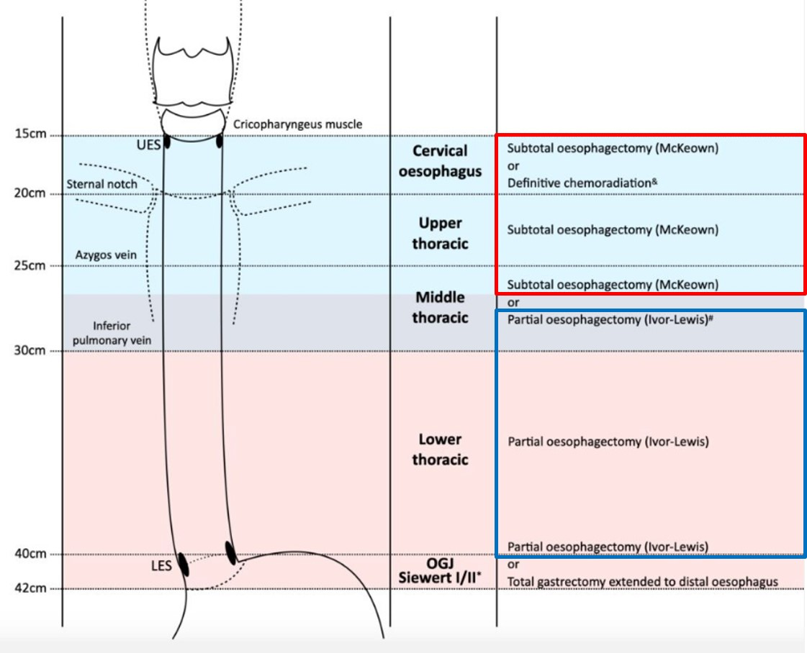
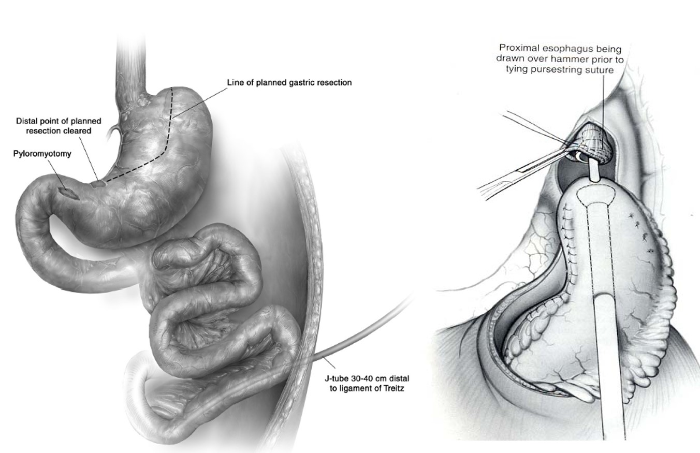
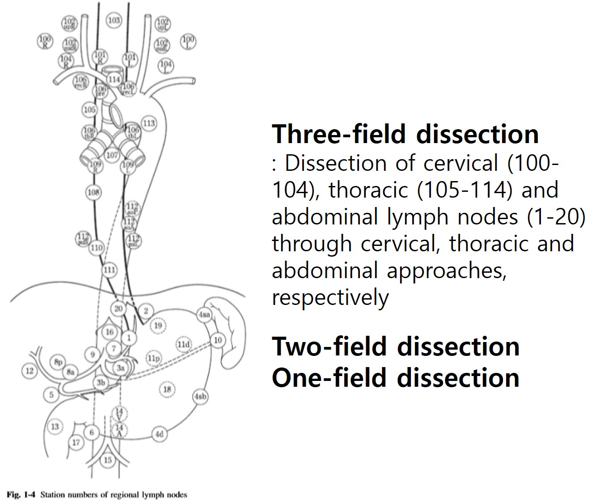
- 문합부 누출은 VAC·stent로 관리하고, 배농과 항생제를 병행한다.
- 재건 위관은 장기 생존 환자에서 gastric tube cancer의 발생 부위가 된다(뒤 항목 참조).
- R0 절제 여부와 림프절 전이 수가 예후를 좌우한다.
10. 식도암의 림프절·전이와 명명법
식도 편평세포암의 림프절 전이 위험은 위나 대장보다 훨씬 높다. 심달도가 깊어질수록, 특히 M3 이상에서 전이 위험이 커진다. 림프절 명명법은 크게 서양식(AJCC)과 일본식(일본식도질환학회·일본위암학회)이 있다. 흉부외과는 미국식 숫자를, 일반외과는 일본식 숫자를 쓰기 때문에 논의가 어긋나기 쉽다.
예를 들어 lower paratracheal nodes는 서양식 8L, 일본식 110번이다. Diaphragmatic nodes는 15↔111, paracardial nodes는 16↔일본식 1(우)·2(좌)에 대응한다. AJCC 7판의 주요 번호(8L, 8M, 15, 16, 17 등)와 일본식(110, 111, 112 등)을 함께 익혀두면 다학제 논의가 원활해진다. 삼성서울병원은 AJCC와 유사하되 위치 기반 명칭을 사용하고, 복부 림프절은 G1~G4로 별도 관리한다.
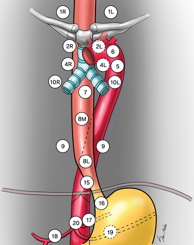
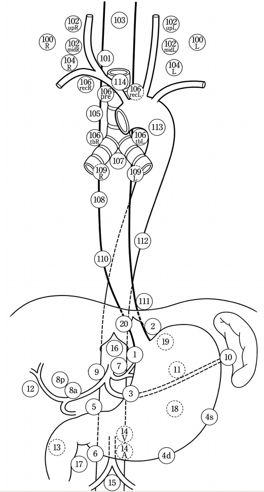
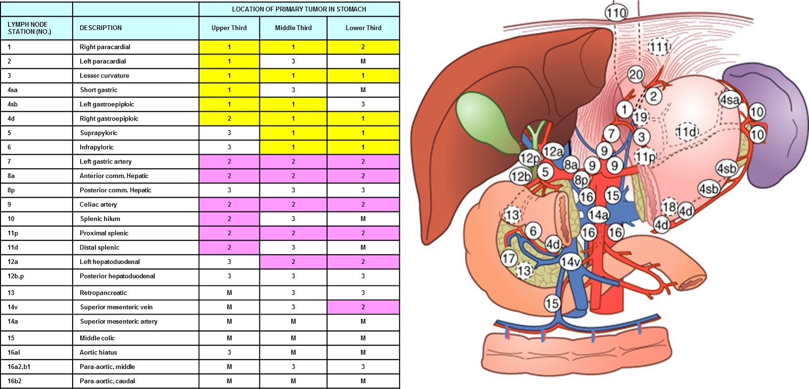
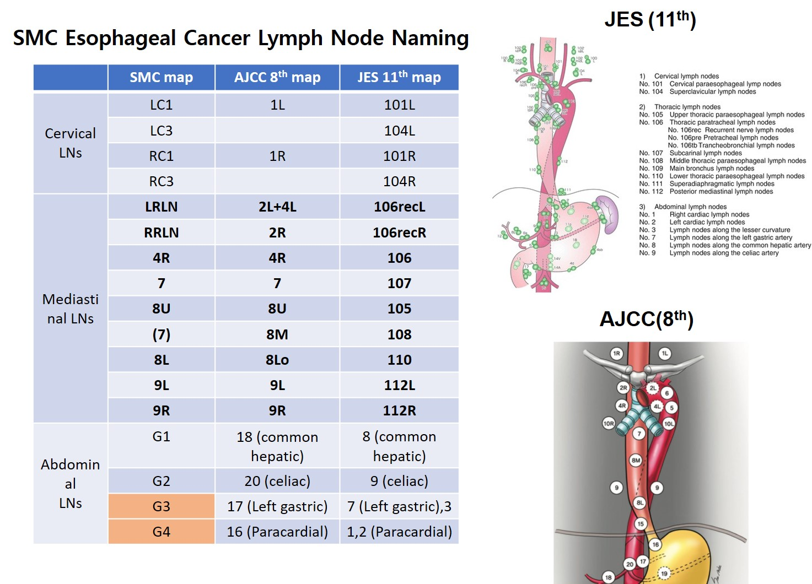
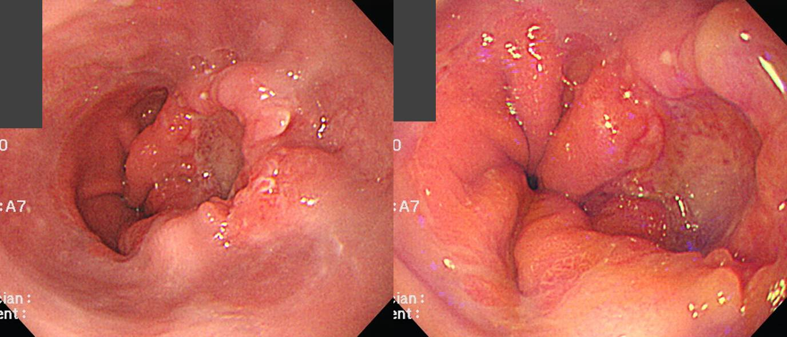
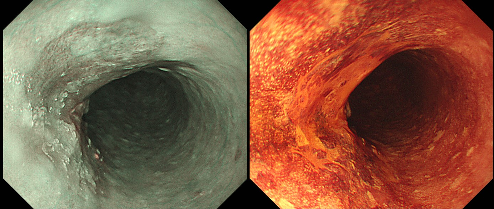
- 림프절 전이가 있으면
cisplatin+5-FU또는paclitaxel+carboplatin기반 neoadjuvant CCRT → 수술이 기본. - 절제 불가·전이성: 항암 단독/병합, 필요시 면역항암제 병합을 다학제로 결정.
- 연하곤란 완화: 식도 stent 또는 gastrostomy,
PPI qd로 증상 조절.
11. ESD 후 협착 — 예방과 치료
조기식도암 내시경치료 후 협착의 빈도는 3~30%로 넓게 보고된다. 위험인자는 병변 둘레 3/4 초과, 길이 4 cm 이상, 경부(cervical) 위치다. 전주(circumferential)에 가까울수록 위험이 커진다. 아주 경한 협착은 무증상이고, 중간 정도는 식이 조심으로 증상을 피할 수 있다.
치료(1) — 풍선확장술과 Mercedes Benz cutting
표준 치료는 TTS 풍선확장술이지만 한 번으로 끝나는 경우는 드물다. 풍선확장의 단점은 blind하게 가장 약한 방향 1-2곳만 벌어진다는 점이다. 이때 IT-knife를 이용한 Mercedes Benz cutting으로 세 방향 이상을 직접 보며 절개하면 효과적이다. ESU setting은 knife·시술자 습관에 따라 달라지며, 저자는 sharp한 cutting을 선호해 주로 Endocut I(effect 3, duration 3, interval 3)를 사용한다.
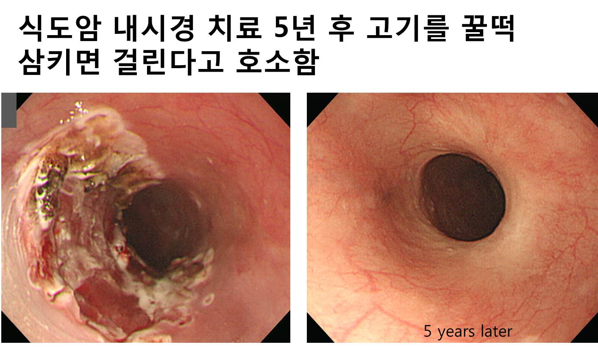
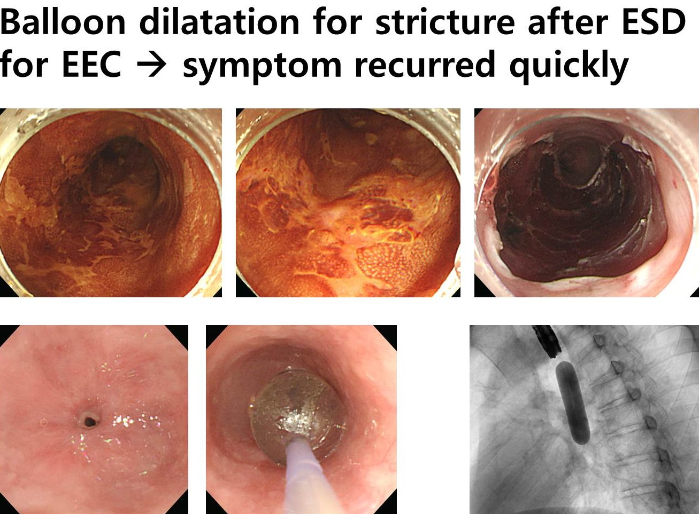
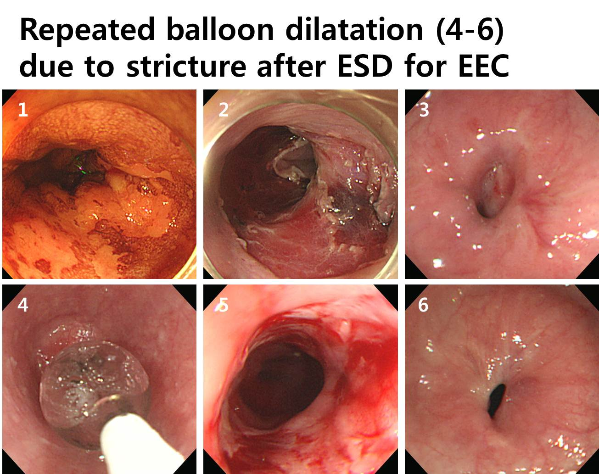
예방 — 경구 스테로이드가 핵심
ESD 후 협착 예방의 근간은 경구 스테로이드다. 전통적 8주 코스는 ESD 2일째부터 시작해 매주 30, 30, 25, 25, 20, 15, 10, 5 mg으로 천천히 감량한다. 민양원 교수팀은 초기 용량은 같게 하되 4주 코스(30, 20, 10, 5 mg)로 빠르게 줄여도 효과가 비슷함을 보였다. Semicircular는 국소 triamcinolone 주사와 경구 steroid 중 선택할 수 있으나, complete circumferential에서는 경구 steroid가 더 효과적이다.
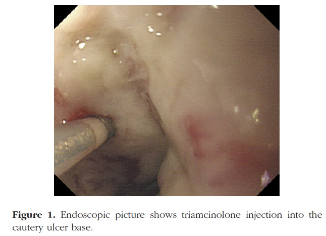
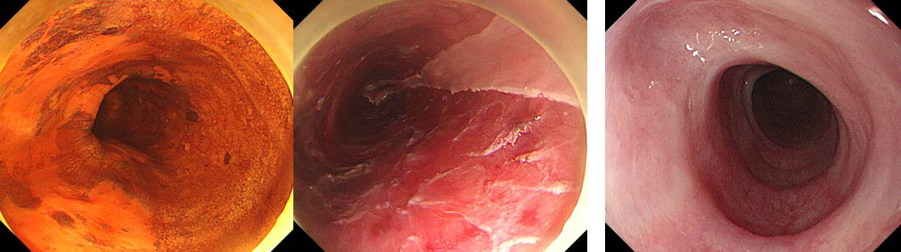
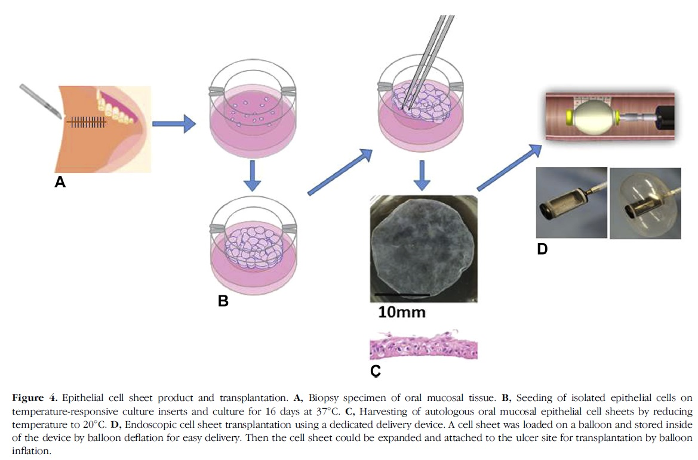
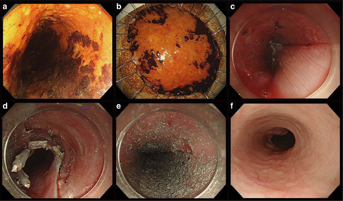
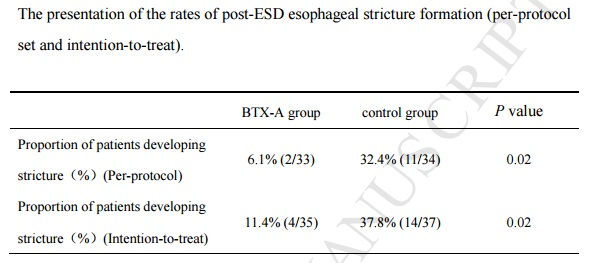
- 협착 예방(고위험): ESD 2일째 시작
prednisolone 30mg qd po → 30,30,25,25,20,15,10,5mg주별 감량 8wk. (또는 4주 코스30,20,10,5mg) - 국소 주입:
triamcinolone acetonide 10mg/mL궤양저에 0.2 mL씩 다발 주입(ESD 직후 또는 3·7·10일). - 확장술: TTS balloon dilation(한 회차 최대 3회 증량 팽창, 15 mm면 연식 가능).
- 난치성/재발: IT-knife 다방향 절개(Mercedes Benz cutting) 후 필요시 balloon 마무리.
- 협착 관련 염증·통증:
PPI qd유지.
- 협착 우려 시 ESD 직후 triamcinolone 주입 또는 8-12주 경구 steroid를 시행한다.
- 3일 후 반복 triamcinolone 주입, preemptive balloon dilatation은 국내 현실에서 번거롭다.
- Cell sheet·PGA shielding은 국내에서 적절한 가격에 구하기 어렵다.
12. 식도 흑색종 (Esophageal melanoma)
식도 원발성 악성 흑색종의 가장 큰 특징은 예후가 나쁘다는 것이다. 평균 생존기간 10~13개월, 5년 생존율 0~4%다. 조기에 발견해 수술한 경우에도 대부분 재발한다. 정상 식도 상피에 melanocyte가 존재하기 때문에 원발성 흑색종이 가능하다.
내시경에서는 검은 색 큰 혹으로 보이지만, 간혹 검고 작은 반점으로 보이는 경우도 있다. 다만 검다고 모두 악성 흑색종은 아니다. 일화적으로 상부식도 작은 병소가 흑색종이었던 조기 증례에서, 하부식도에 넓은 검은 부위가 있었으나 이는 암이 아니라 melanocytosis였다. 식도 흑색종의 약 25~30%에서 melanocytosis가 동반되어 전구 요인으로 추정된다.
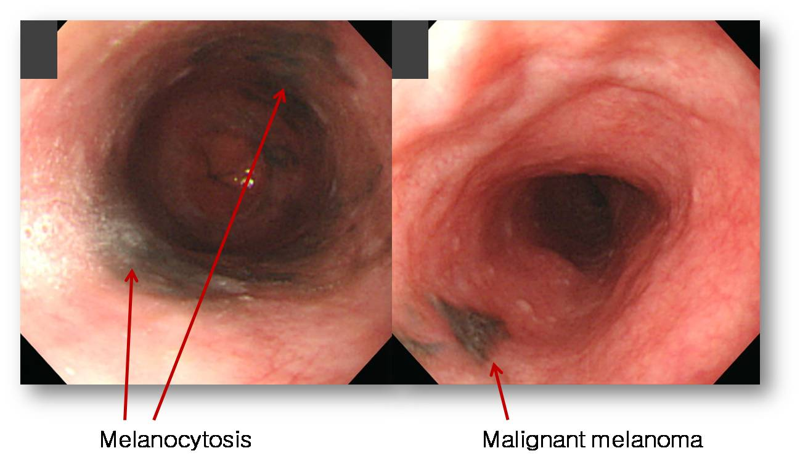
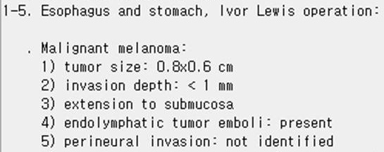
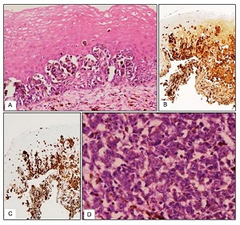
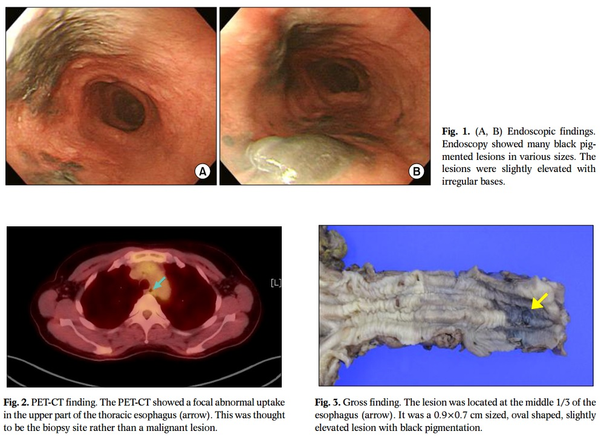
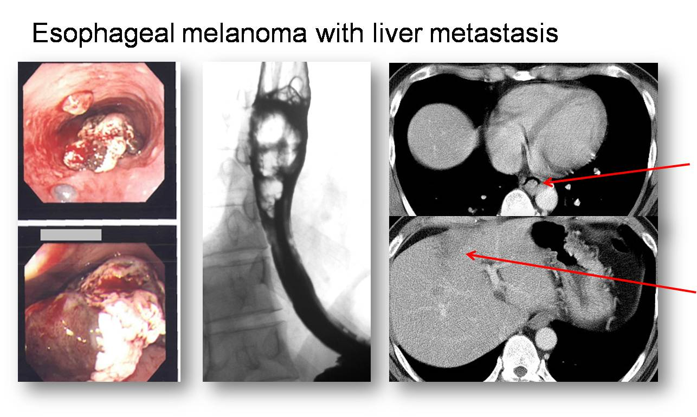
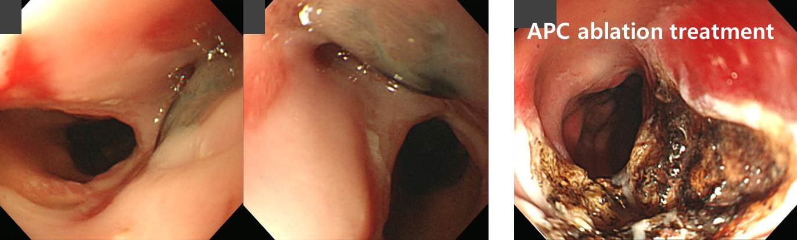
- 검은 색소 침착이 있으면 악성 흑색종 가능성을 항상 염두에 둔다. 단, 조직검사는 병변에 따라 천공 위험이 있어 신중히 한다.
- 전형적 위치·모양(결핵 후 반흔, 중부식도 견인 게실 바닥)의 anthracotic pigmentation은 조직검사가 불필요할 수 있다.
- 그 외 검은 색소 침착은 조직검사가 안전하다. 흑색종이 mass 없이 넓은 patch로 나타날 수 있다.
- 국한성: 수술적 절제. 심달도·재발 위험이 높으면 적극적 수술.
- 재발·절제 불가/고위험:
APC ablation, 면역항암(nivolumab·ipilimumab)·표적치료를 다학제로 고려. - 증상 조절:
PPI qd, 연하곤란 시 확장술·stent.
13. Gastric tube cancer — 식도 재건 위관암
식도암 수술(Ivor-Lewis) 후 위를 끌어올려 만든 위관(gastric tube)에서 발생하는 위암을 gastric tube cancer라 한다. 식도암 환자의 장기 생존이 늘면서 문제가 되고 있다. Niigata 대학 자료(Bamba. Surg Endosc 2010)에서 10년 누적 발생률은 8.6%, 식도절제에서 GTC 발견까지 중앙값 86개월이었다. Keio 자료(Okamoto. Ann Thorac Surg 2004)에서는 synchronous 타장기암이 49%, gastric tube cancer가 7%였다.
삼성서울병원 경험(Kim. Hepatogastroenterology 2008)에서는 식도암 수술 환자 728명 중 11명(1.1%)에서 위관암이 발견되었고, 식도암에서 위암까지 중앙값 37개월이었다. 무증상 37.5%, 상복부통 25%, 폐색성 증상 37.5%였다. 3명은 CT가 아닌 내시경으로만 발견되었다. 즉 식도암 수술 후에도 정기 위내시경 검사가 반드시 필요하다.
위치 기술이 어렵다
수술 후에는 해부학적 구조가 바뀌어 전정부·체부, 소만·대만 구분이 어렵다. 그래서 상절치(upper incisor)로부터의 거리를 중요시하고, diaphragmatic orifice보다 상단(intrathoracic)인지 하단(intraabdominal)인지를 명시한다. "상절치 20 cm에 식도-위 문합부, 33 cm에 위암 병소, 40 cm에 diaphragmatic orifice"처럼 쓰면 정확하다.
내시경 치료와 수술
진행된 상태로 발견되면 예후가 나쁘다(보만 4형 진행성 위암 증례 존재). 그러나 정기 내시경으로 조기 발견하면 ESD로 치료할 수 있다. Niigata 자료에서 ESD의 완전 치유적 절제율은 90%로 EMR(14.3%)보다 유의하게 높았다. 진행된 위관암은 수술이 표준이나, 식도를 대부분 절제한 상태라 colonic interposition이 필요하고 morbidity·mortality가 크다.
- 식도암 수술 후에도 정기 위내시경을 시행한다. 위암이 흔한 우리나라에서는 특히 중요하다.
- 위치를 거리·횡격막구 상하로 기술해야 추적과 치료 계획이 가능하다.
- intra-thoracic stomach의 ESD는 고난도이며, 최종 병리에서 deep SM·림프관 침윤·절제변연 양성이면 수술로 전환한다.
- 조기 위관암:
ESD(완전절제율 우수). 고난도·합병증 대비. - 표준 치료: 진행성은 수술(총위관절제+colonic interposition).
- ESD 후 궤양·증상:
kcab 50mg qd ac 8wk또는esomeprazole 40mg qd pc 8wk. - ESD 후 H. pylori 양성:
amox 1g bid pc + clarithro 500mg bid pc + PPI bid pc 14d.
14. 전이성 및 기타 — 피부 흑색종 전이와 melanocytosis
악성 흑색종은 전체 피부암의 4%, 피부암 사망의 약 80%를 차지한다. 림프·혈행성으로 전이하며, 가장 흔한 원격 전이부위는 피부·피하조직(42-59%)이고 폐(18-36%), 간(14-20%), 뇌(12-20%), 뼈(11-17%), 위장관(1-7%) 순이다. 위장관 중에서는 공장·회장(26-58%), 대장(5-28%), 십이지장(12-19%), 식도(3-9%) 순이다. 부검 시 약 60%에서 위장관 전이가 확인된다.
식도 악성 흑색종 외에 감별해야 할 검은 색소 병변으로 anthracotic pigmentation과 melanocytosis가 있다. Anthracotic pigmentation은 식도 결핵의 결과로 생기는 경우가 많다. Melanocytosis를 melanoma의 전구병변으로 볼 것인가는 아직 불명확하지만, 진행할 가능성이 있다는 견해가 있다.
- Anthracotic pigmentation: 결핵력, 전형적 위치(중부식도 견인 게실 바닥)면 조직검사 생략 가능.
- 그 외 검은 색소 침착: 조직검사가 안전하며, melanoma가 patch로 나타날 수 있음을 기억한다.
- 위장관 전이가 확인된 흑색종은 80%가 1년 내 사망 — 적극적 병기평가와 완화치료 계획.
15. 이미지–소견–치료 정리표
| 질환 | 대표 이미지 | 내시경 소견 | 감별·진단 포인트 | 치료·처방 |
|---|---|---|---|---|
| 조기식도 편평세포암 | 점막 혼탁·조잡, 혈관망 소실, 발적, 0-IIa/IIb/IIc, 요오드 비염색·NBI 이상혈관. | 심달도 M1/M2/M3·SM1(200µm) 판정이 핵심. M3부터 전이 위험 급증. carcinoma in situ는 D-code. | ESD en bloc; ESD 후 esomeprazole 40mg qd 4-8wk; 심달도 깊으면 수술·CRT |
|
| 진행성 식도 편평세포암 | 융기·궤양성 종괴, 고유근층 침범 시 연동운동 소실, 협착·출혈. | EUS·CT/PET 병기. 하부식도는 복강내 림프절 전이 확인. | cisplatin+5-FU 의 neoadjuvant CCRT 후 Ivor-Lewis 수술; 진행성은 paclitaxel+carboplatin |
|
| 식도 선암 / 바렛식도선암 | 하부식도 선암 + 주변 바렛식도. 2-4시 방향 호발, EG junction 병소. | cardia cancer와 감별(림프절 전이 위험 미정립). SM1 = 500µm(위암과 동일). | Early: ESD/RFA; 진행성: cisplatin+5-FU 또는 paclitaxel+carboplatin CRT |
|
| 식도 흑색종 | 검은 색 큰 종괴, 또는 작은 반점. 넓은 black patch 가능. | 평균 생존 10-13개월, 5년 0-4%. 약 25-30%에서 melanocytosis 동반. | 국한성 수술; 재발·절제불가 APC ablation, 면역항암(nivolumab); PPI qd |
|
| ESD 후 협착 | ESD 경계의 web형 협착, 연하곤란. 3/4 초과·4cm 이상·경부에서 위험. | 풍선확장은 blind, 일부만 벌어짐. 고위험은 예방이 핵심. | prednisolone 30→5mg 주별 감량 8wk; triamcinolone 국소주입; TTS balloon; Mercedes Benz cutting; PPI qd |
|
| Gastric tube cancer | 재건 위관(intrathoracic/intraabdominal)의 위암. 위치는 상절치 거리로 기술. | 10년 누적 8.6%. CT보다 내시경으로 먼저 발견. 정기 내시경 필수. | 조기 ESD(완전절제율 90%); 진행성은 수술+colonic interposition; kcab 50mg qd 8wk |
|
| 전이성 흑색종 | 식도 점막·점막하의 검은 전이 병변(원발 피부 흑색종 병력). | 위장관 전이 시 80%가 1년 내 사망. 부검 시 60% 발견. | 전신 항암·면역항암; 출혈·폐색은 지혈·stent·완화치료 | |
| Melanocytosis / anthracotic pigmentation | 중부식도 견인 게실 바닥·결핵 후 반흔의 검은 색소 침착, 넓은 patch. | 전형적 위치·모양이면 조직검사 불필요. 그 외는 melanoma 감별 위해 조직검사. | 대개 경과관찰; melanoma 동반 시 해당 치료 | |
| EG junction 선암 | 식도-위 접합부의 선암, 병소 중앙 위치 애매, 주변 바렛식도 관찰. | 식도암 vs 위암 구분(병소 중앙·바렛식도 유무). 항암 후 축소되면 기원이 드러남. | 위암에 준한 cisplatin+5-FU 항암; 국소 병변은 수술/내시경 검토 |
연습문제
1. 식도 편평세포암에서 위암과 달리 점막층 세부분류(M1/M2/M3)가 특히 중요한 이유는?
- 크기가 작아서
- M3에서 림프절 전이가 갑자기 많아지기 때문
- 선암으로 잘 변하기 때문
- 조직검사가 어려워서
2. 식도암에서 SM1으로 정의되는 점막하 침윤 깊이는?
- 100 µm
- 200 µm
- 500 µm
- 1000 µm
3. 식도에서 요오드(IKI) 색소내시경에서 종양·이형성 부위가 나타나는 양상은?
- 갈색으로 진하게 염색된다
- 염색되지 않는 비염색 부위로 보인다
- 파랗게 변한다
- 형광을 낸다
4. 식도 carcinoma in situ(intraepithelial carcinoma)에 대한 설명으로 옳은 것은? (O/X)
5. 바렛식도선암의 SM 침윤 기준으로 Paris classification이 제시하는 값은?
- 100 µm
- 200 µm
- 500 µm
- 1000 µm
6. 바렛식도선암이 내시경에서 상대적으로 잘 발생하는 방향은?
- 2-4시 방향
- 6-8시 방향
- 10-12시 방향
- 방향과 무관하게 항상 random
7. 조기식도암 ESD 적응에 대해 민양원 교수가 제시한 적극적 기준으로 언급된 침윤 깊이는?
- M1까지만
- M2까지만(예외적으로 M3)
- 200 µm 이하의 superficial SM cancer까지
- 깊이와 무관하게 모두
8. T3 또는 N1 이상의 식도암에서 표준으로 여겨지는 치료 전략은?
- 즉시 수술 단독
- neoadjuvant CCRT 후 수술
- 내시경 절제 단독
- 경과관찰
9. 수술 후 문합부 누출(leak)을 치료하는 endoscopic vacuum-assisted closure(VAC)에서 점막이 관에 달라붙는 것을 막는 핵심 재료는?
10. 식도 ESD 후 협착의 위험인자로 거리가 먼 것은?
- 병변 둘레 3/4 초과
- 병변 길이 4 cm 이상
- 경부(cervical) 위치
- 병변이 1 cm 미만으로 작음
11. 식도암 ESD 후 협착 예방을 위한 경구 스테로이드 8주 코스의 전형적 시작 용량과 감량 방식은?
- 5mg qd 고정 8주
- ESD 2일째 30mg qd 시작 → 주별로 30,30,25,25,20,15,10,5mg으로 감량
- 60mg qd 3일 후 중단
- triamcinolone 100mg IV 1회
12. 풍선확장술로 잘 벌어지지 않는 식도 협착에서 IT-knife로 세 방향 이상을 직접 보며 절개하는 방법의 이름은?
13. 식도암 수술(Ivor-Lewis) 후 위관(gastric tube)에서 발생하는 위암에 대한 설명으로 옳은 것은? (O/X)
14. 식도 원발성 악성 흑색종의 특징으로 옳지 않은 것은?
- 예후가 나쁘고 평균 생존 10-13개월
- 약 25-30%에서 melanocytosis가 동반
- 조기 발견·수술하면 대부분 완치된다
- 검은 색 큰 종괴 또는 patch로 보일 수 있다